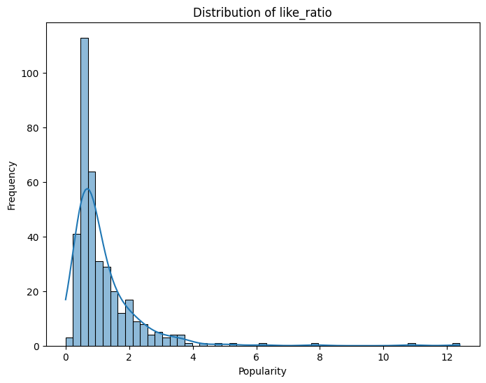
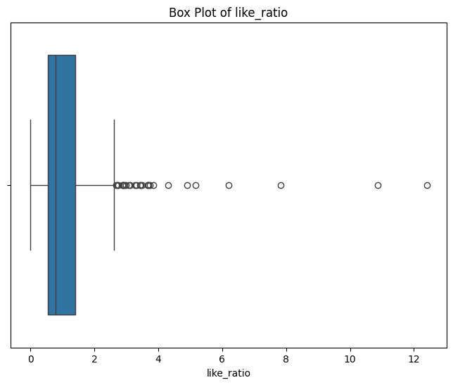
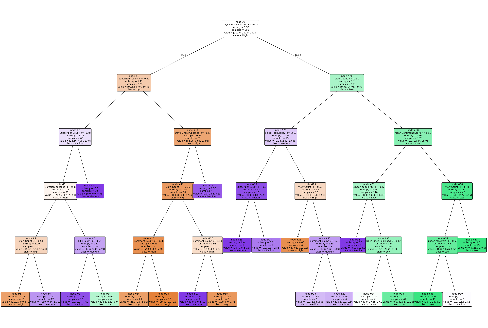

Note: You should remove these instruction once you have read and understood them. They should not be included in your final submission.
Remember: Exactly what do you put on this page will be specific you your project and data. Some things might “make more sense” on one page rather than another, depending on your workflow. Organize your project in a logical way that makes the most sense to you.
Suggested page structure
Here’s one suggested structure for organizing your technical pages. You can adjust this as needed:
Audience:Remember that these are written for a technical audience. Assume they have completed the DSAN program, but would appreciate refreshers of the important concepts.
Introduction and Motivation: Briefly outline your plan. What are you doing on this page, and why? Provide context and explain the goals of your analysis.
Overview of Methods: Give a concise explanation of the methods used. For example, if using K-Means clustering, describe what it is, how it works, the inputs and outputs, and key hyperparameters.
Code: Include the code you used to implement your workflow.
Summary and Interpretation of Results: Summarize your findings, interpret the results, and discuss their technical implications.
What to address
The following is a list of some of the things you should address on this page. This list is not exhaustive, and you should use your judgment to decide what is most relevant to your project.
Please do some form of “Feature selection” in your project and include a section on it. Discuss the process you went through to select the features that you used in your model, this should be done for both classification models and regression models. What did you include and why? What did you exclude? What was the reasoning behind your decisions? This section can be included here, or you can make a new page in the dropdown menu for it.
Please break this page into a “regression” section, “binary classification” section, and a “Multi-class classification” section. For each case you should try multiple methods, including those discussed in class, and compare and contrast their preformance and results.
Data Preprocessing
Normalization or Standardization: Apply techniques to scale the data appropriately.
Feature Selection or Extraction: Identify and select the most relevant features for your analysis.
Encoding Categorical Variables: Convert categorical variables into a suitable format for modeling.
Model Selection
Model Rationale: Explain the reasons for selecting specific models or algorithms.
Overview of Algorithms: Provide a brief overview of the algorithms used
Training and Testing Strategy
Split Methods: Detail the splitting methods used (e.g., train-test split, cross-validation).
Dataset Proportions: Specify the proportions used for splitting the dataset.
Model Evaluation Metrics
Binary Classification Metrics: Discuss metrics such as accuracy, precision, recall, F1 score, and ROC-AUC.
Multiclass Classification Metrics: Include metrics such as confusion matrix and macro/micro F1 score.
Regression Metrics: Explain metrics such as RMSE, MAE, and R-squared, parity plots, etc.
Results
Model Performance Summary: Provide a summary of the model’s performance.
Visualizations: Include visualizations of results (e.g., ROC curves, feature importance plots).
Discussion
Result Interpretation: Interpret the results obtained from the analysis.
Model Performance Comparison: Compare the performance of different models.
Insights Gained: Share insights learned from the analysis.
Regression
Introduction and Motivation
This analysis aims to explore the factors influencing the popularity of content on a digital platform. We will use various regression models to predict popularity based on multiple features extracted from our dataset.
Overview of Methods
We will use Support Vector Regression (SVR) and linear models like Ridge and Lasso regression.
import pandas as pdfrom sklearn.svm import SVRfrom sklearn.metrics import mean_squared_error, r2_scorefrom sklearn.inspection import permutation_importancefrom sklearn.model_selection import train_test_split# Load the datasetdf = pd.read_csv('../../data/processed-data/Normalized_Data_with_Sentiments.csv')# Specify the feature columnsfeatures = ['Days Since Published', 'View Count', 'Like Count', 'Comment Count','Subscriber Count', 'Definition', 'Mean Sentiment Score','Duration_seconds', 'genre_label', 'singer_followers', 'singer_popularity']# Ensure the target column 'popularity' exists in DataFrameif'Popularity'notin df.columns:raiseValueError("The 'popularity' column is missing from the DataFrame.")# Split into input (X) and target (y)X = df[features] # Inputsy = df['Popularity'] # Target# Split data into training and test setsX_train, X_test, y_train, y_test = train_test_split(X, y, test_size=0.2, random_state=42)# Assuming the SVR model is already trained as svr_modelsvr_model = SVR(kernel='rbf', C=100, gamma='auto')svr_model.fit(X_train, y_train)# Predict on the testing datay_pred = svr_model.predict(X_test)# Calculate mean squared error and R^2 scoremse = mean_squared_error(y_test, y_pred)r2 = r2_score(y_test, y_pred)print(f"Mean Squared Error: {mse}, R^2 Score: {r2}")# Perform permutation importanceperm_importance = permutation_importance(svr_model, X_test, y_test, n_repeats=30, random_state=42)# Get importance scoresimportance_scores = perm_importance.importances_mean# Print feature importanceprint("Feature importances:")for i, feature inenumerate(features):print(f"{feature}: {importance_scores[i]}")
Conclusion
Model
MSE
R² Score
SVR
99.74699515216331
0.568546463925952
Linear Regression
123.52107678768438
0.46571217229730644
Ridge Regression
125.61840469866303
0.4566402243943334
Lasso Regression
124.26131518891665
0.46251028661381044
Feature importances from SVR: - Days Since Published: 0.14590051030422282 - View Count: 0.0689113148502238 - Like Count: 0.06300639647560934 - Comment Count: 0.004829835437846231 - Subscriber Count: 0.15936065653760564 - Definition: 0.05992188839233011 - Mean Sentiment Score: 0.037774091955604584 - Duration_seconds: 0.00110286673615743 - genre_label: 0.1581978297916415 - singer_followers: 0.0360773423716881 - singer_popularity: 0.6712934520249385
import matplotlib.pyplot as pltplt.figure(figsize=(10, 6))plt.barh(features, importance_scores, color='skyblue')plt.xlabel('Importance Score')plt.title('Feature Importance Scores')plt.gca().invert_yaxis() # Invert y-axis to have the highest score on topplt.show()
Result Interpretation
The Support Vector Regression (SVR) model outperformed the linear models in terms of Mean Squared Error (MSE) and R² score. The lower MSE and higher R² of the SVR indicate better performance in fitting the data compared to the Linear, Ridge, and Lasso regressions. The R² scores suggest that the SVR model was able to explain approximately 56.85% of the variance in the dataset, which is more than the approximately 46.57% by the Linear Regression, 45.66% by Ridge, and 46.25% by Lasso Regression.
Insights
From the SVR model’s permutation importance, ‘singer_popularity’ emerged as the most influential feature, significantly impacting the prediction of a song’s popularity. This suggests that more popular singers tend to have more popular songs, highlighting the influence of an artist’s existing reputation on new releases.
Binary Classification
Introduction and Motivation
The goal of this section is to predict whether a song is considered “popular” using binary classification methods. We aim to understand the features that significantly influence song popularity on digital platforms.
Overview of Methods
In this section, we focus on Logistic Regression for binary classification. Logistic Regression is chosen for its ability to provide probabilities for outcomes and its interpretability.
from sklearn.linear_model import LogisticRegressionfrom sklearn.metrics import accuracy_score, confusion_matrix, classification_reportfrom imblearn.under_sampling import RandomUnderSamplerfrom sklearn.model_selection import train_test_split# Assume df is your DataFrame and the preprocessing has been done to define 'is_popular'features = ['Days Since Published', 'View Count', 'Like Count', 'Comment Count','Subscriber Count', 'Definition', 'Mean Sentiment Score','Duration_seconds', 'genre_label', 'singer_followers', 'singer_popularity']X = df[features]y = df['is_popular']# Splitting the dataset and under-samplingX_train, X_test, y_train, y_test = train_test_split(X, y, test_size=0.2, random_state=42)rus = RandomUnderSampler(random_state=42)X_resampled, y_resampled = rus.fit_resample(X_train, y_train)# Logistic Regression modellr_model = LogisticRegression(random_state=42, max_iter=1000)lr_model.fit(X_resampled, y_resampled)# Making predictions and evaluating the modely_pred = lr_model.predict(X_test)accuracy = accuracy_score(y_test, y_pred)conf_matrix = confusion_matrix(y_test, y_pred)class_report = classification_report(y_test, y_pred)print("Logistic Regression Model Evaluation")print("Accuracy:", accuracy)print("Confusion Matrix:\n", conf_matrix)print("Classification Report:\n", class_report)
Results
The Logistic Regression model showed an accuracy of 77.33%, with a detailed classification report indicating precision, recall, and F1-score for both classes.
Model Performance Summary
Comparison of model performance metrics for different classification models used in predicting song popularity:
Model
Accuracy
Precision
Recall
F1-Score
Logistic Regression
77.33%
0.96 (False), 0.35 (True)
0.77 (False), 0.80 (True)
0.85 (False), 0.48 (True)
SVM (Best Kernel)
75.00%
0.91 (False), 0.26 (True)
0.78 (False), 0.50 (True)
0.84 (False), 0.34 (True)
Random Forest
71.00%
0.92 (False), 0.25 (True)
0.72 (False), 0.60 (True)
0.81 (False), 0.35 (True)
Conclusion
The Logistic Regression model, adjusted for class imbalance via under-sampling, provided satisfactory classification results, proving effective for identifying popular songs.
Result Interpretation
The model was particularly strong in identifying non-popular songs (class ‘False’) with high precision and recall. And it has a higher recall score on popular songs compared to other models.
Model Performance Comparison
This model was compared to other binary classification models such as SVM and Random Forest. Logistic Regression was chosen for its balance between performance and interpretability in this specific context. And it has a higher recall score on popular songs compared to other models.
Multi-class Classification
Introduction and Motivation
The goal of this multi- class classification is to predict the interaction rate (like ratio= like count/ view count) of youtube mv. We want to predict the interaction rate of the content by features such as number of days since posting and number of comments.
This analysis firstly hopes to improve data analysis and model selection capabilities, and secondly tries to help content creators optimize their creation strategies.
Overview of Methods
Multiple classification algorithms were used to predict the popularity (like ratio) of short video content. The like ratio was first categorized into three categories: low (≤0.7), medium (0.7-1.6), and high (>1.6), and then predicted using three models: logistic regression, decision tree, and random forest. To address data imbalance, SMOTE oversampling technique was used. The input features of the model included nine variables such as days of posting/comments, number of subscribers, sentiment score, video duration, number of creator followers, and popularity. The decision tree model was hyper-parametrically optimized by grid search (GridSearchCV) and the model performance was evaluated using cross-validation. This combination of methods enables comprehensive assessment and prediction of video content popularity, providing data support for content creation and platform operation.
Code
logistic regression
X = df[features]y = df['Like Ratio Category']# Data set splittingX_train, X_test, y_train, y_test = train_test_split(X, y, test_size=0.2, random_state=42)# Feature standardizationscaler = StandardScaler()X_train_scaled = scaler.fit_transform(X_train)X_test_scaled = scaler.transform(X_test)smote = SMOTE(random_state=42)X_train_resampled, y_train_resampled = smote.fit_resample(X_train_scaled, y_train)# Initialize the Logistic Regression model (One-vs-Rest for multi-class)model = LogisticRegression(multi_class='ovr', max_iter=1000, random_state=42)# Train the modelmodel.fit(X_train_scaled, y_train)# Predict on the test sety_pred = model.predict(X_test_scaled)X_scaled = scaler.fit_transform(X) # Fit and transform the entire dataset# Cross-validation to get a better estimate of the model performancecross_val_scores = cross_val_score(model, X_scaled, y, cv=5)print("\nCross-validation scores:", cross_val_scores)print("\nMean cross-validation score:", cross_val_scores.mean())# Evaluate the modelprint("Accuracy:", accuracy_score(y_test, y_pred))print("\nClassification Report:\n", classification_report(y_test, y_pred))
f_model = RandomForestClassifier(n_estimators=100)# Train the modelrf_model.fit(X_train_scaled, y_train)# Predict on the test sety_pred_rf = rf_model.predict(X_test_scaled)# Evaluate the modelprint("Random Forest Accuracy:", accuracy_score(y_test, y_pred_rf))print("\nRandom Forest Classification Report:\n", classification_report(y_test, y_pred_rf))# Cross-validation to get a better estimate of the model performancecross_val_scores_rf = cross_val_score(rf_model, X_train_scaled, y_train, cv=5)print("\nRandom Forest Cross-validation scores:", cross_val_scores_rf)print("\nMean cross-validation score (Random Forest):", cross_val_scores_rf.mean())
Result
Model performance Result
Comparison of Model Performance Metrics for Different Classification Models Used in Predicting like_ratio (Multi-Class Classification)
Model
Accuracy
Precision
Recall
F1-Score
Logistic Regression
77.33%
0.64 (High), 0.86 (Low), 0.73 (Medium)
0.82 (High), 0.86 (Low), 0.66 (Medium)
0.72 (High), 0.86 (Low), 0.69 (Medium)
Decision Tree
74.67%
0.56 (High), 0.85 (Low), 0.74 (Medium)
0.91 (High), 0.83 (Low), 0.59 (Medium)
0.69 (High), 0.84 (Low), 0.65 (Medium)
Random Forest
78.67%
0.69 (High), 0.88 (Low), 0.73 (Medium)
0.82 (High), 0.80 (Low), 0.76 (Medium)
0.75 (High), 0.84 (Low), 0.75 (Medium)
Cross-Validation Scores
Model
Cross-Validation Scores
Mean Cross-Validation Score
Logistic Regression
[0.6533, 0.6133, 0.8133, 0.72, 0.4667]
0.6533
Decision Tree
Refined Best CV: [0.6208 (balanced parameters)]
0.6208
Random Forest
[0.75, 0.6833, 0.6833, 0.7, 0.7833]
0.72
Result Interpretation
We can see from the table that the Random Forest model is the most effective model for predicting the like_ratio, achieving the highest accuracy (78.67%) and a balanced performance in terms of Precision, Recall, and F1-Score across all classes (High, Low, and Medium). Its average cross-validation score is 0.72, demonstrating good generalization.
The Logistic regression model is second effective one with an overall accuracy of 77.33%. While the low rank Precision (0.86) is strong, the medium rank Recall (0.66) performed relatively weakly. Nonetheless, the model is metrically consistent, showing its suitability for applications that require interpretability and stable performance.
For the Decision Tree model, it has the lowest overall accuracy (74.67%). While it performs well in recognizing high levels with a recall of 0.91, it performs poorly in recognizing intermediate levels where it has the lowest accuracy (0.74) and recall (0.59). But it can distinguish between high & low cases well.
Insights
From the results, we can find that the Random Forest model shows the best balance of accuracy, precision, recall, and F1 value in predicting the like_ratio of songs, especially in the medium class (Medium). This indicates that Random Forest has a strong ability in dealing with multi-categorization problems. The Logistic Regression model, on the other hand, has high precision and recall in identifying the low like_ratio category, suggesting that it is more effective in distinguishing between low popularity songs. while the Decision Tree model’s perform is not so good as we expected among all these three models, with low recall especially in the Medium category, suggesting that it may be unsuitable for dealing with such a complex multi-class classification task
This multi-class classification enables me to better understand the advantages and limitations of different models in multi-class classification tasks, and teach me lesson that we should choose the right model for future projects based on the specific needs of the task.
Code
Provide the source code used for this section of the project here.
If you’re using a package for code organization, you can import it at this point. However, make sure that the actual workflow steps—including data processing, analysis, and other key tasks—are conducted and clearly demonstrated on this page. The goal is to show the technical flow of your project, highlighting how the code is executed to achieve your results.
If relevant, link to additional documentation or external references that explain any complex components. This section should give readers a clear view of how the project is implemented from a technical perspective.
Remember, this page is a technical narrative, NOT just a notebook with a collection of code cells, include in-line Prose, to describe what is going on.
For the regression part, we choose Popularity value from Spotify as the target and other numeral values from Youtube and Spotify as features for model buidling.
And after comparing several regression models, we discover that Support Vector Regression has the best performance.
Besides, to determine the importance rank for each feature, we take permutation_importance function and get the permutated score for ecah feature.
import pandas as pdfrom sklearn.svm import SVRfrom sklearn.metrics import mean_squared_error, r2_scorefrom sklearn.inspection import permutation_importancefrom sklearn.model_selection import train_test_split# Load the datasetdf = pd.read_csv('../../data/processed-data/Normalized_Data_with_Sentiments.csv')# Specify the feature columnsfeatures = ['Days Since Published', 'View Count', 'Like Count', 'Comment Count','Subscriber Count', 'Definition', 'Mean Sentiment Score','Duration_seconds', 'genre_label', 'singer_followers', 'singer_popularity']# Ensure the target column 'popularity' exists in DataFrameif'Popularity'notin df.columns:raiseValueError("The 'popularity' column is missing from the DataFrame.")# Split into input (X) and target (y)X = df[features] # Inputsy = df['Popularity'] # Target# Split data into training and test setsX_train, X_test, y_train, y_test = train_test_split(X, y, test_size=0.2, random_state=42)# Assuming the SVR model is already trained as `svr_model`svr_model = SVR(kernel='rbf', C=100, gamma='auto')svr_model.fit(X_train, y_train)# Predict on the testing datay_pred = svr_model.predict(X_test)# Calculate mean squared error and R^2 scoremse = mean_squared_error(y_test, y_pred)r2 = r2_score(y_test, y_pred)print(f"Mean Squared Error: {mse}, R^2 Score: {r2}")# Perform permutation importanceperm_importance = permutation_importance(svr_model, X_test, y_test, n_repeats=30, random_state=42)# Get importance scoresimportance_scores = perm_importance.importances_mean# Print feature importanceprint("Feature importances:")for i, feature inenumerate(features):print(f"{feature}: {importance_scores[i]}")
Mean Squared Error: 99.74699515216321, R^2 Score: 0.5685464639259524
Feature importances:
Days Since Published: 0.1459005103042238
View Count: 0.0689113148502243
Like Count: 0.06300639647560942
Comment Count: 0.004829835437846308
Subscriber Count: 0.15936065653760553
Definition: 0.05992188839233135
Mean Sentiment Score: 0.037774091955604674
Duration_seconds: 0.0011028667361578036
genre_label: 0.15819782979164201
singer_followers: 0.0360773423716888
singer_popularity: 0.6712934520249385
import matplotlib.pyplot as pltplt.figure(figsize=(10, 6))plt.barh(features, importance_scores, color='skyblue')plt.xlabel('Importance Score')plt.title('Feature Importance Scores')plt.gca().invert_yaxis() # Invert y-axis to have the highest score on topplt.show()
from sklearn.linear_model import LinearRegression, Ridge, Lasso# Split into input (X) and target (y)X = df[features] # Inputsy = df['Popularity'] # Target# Split data into training and test setsX_train, X_test, y_train, y_test = train_test_split(X, y, test_size=0.2, random_state=42)# Initialize modelslinear_model = LinearRegression()ridge_model = Ridge(alpha=100) # Alpha is the regularization strengthlasso_model = Lasso(alpha=0.1) # Alpha can be adjusted based on the scale of features# Train the modelslinear_model.fit(X_train, y_train)ridge_model.fit(X_train, y_train)lasso_model.fit(X_train, y_train)# Predict using the test datasety_pred_linear = linear_model.predict(X_test)y_pred_ridge = ridge_model.predict(X_test)y_pred_lasso = lasso_model.predict(X_test)# Calculate regression model metricsmse_linear = mean_squared_error(y_test, y_pred_linear)r2_linear = r2_score(y_test, y_pred_linear)mse_ridge = mean_squared_error(y_test, y_pred_ridge)r2_ridge = r2_score(y_test, y_pred_ridge)mse_lasso = mean_squared_error(y_test, y_pred_lasso)r2_lasso = r2_score(y_test, y_pred_lasso)# Print resultsprint(f"Linear Regression - Mean Squared Error: {mse_linear}, R^2 Score: {r2_linear}")print(f"Ridge Regression - Mean Squared Error: {mse_ridge}, R^2 Score: {r2_ridge}")print(f"Lasso Regression - Mean Squared Error: {mse_lasso}, R^2 Score: {r2_lasso}")
Linear Regression - Mean Squared Error: 123.52107678768424, R^2 Score: 0.4657121722973071
Ridge Regression - Mean Squared Error: 125.618404698663, R^2 Score: 0.4566402243943335
Lasso Regression - Mean Squared Error: 124.26131518891665, R^2 Score: 0.46251028661381044
We tried using PCA to reduce dimensions, but it doesn’t seem to work very well.
from sklearn.decomposition import PCA# Applying PCApca = PCA(n_components=3) # Reduce to 2 dimensions for visualizationX_pca = pca.fit_transform(X)# How much variance was retained?print("Explained Variance Ratio:", pca.explained_variance_ratio_)print("Total Variance Explained:", sum(pca.explained_variance_ratio_))
Explained Variance Ratio: [0.35411601 0.1606999 0.12194563]
Total Variance Explained: 0.636761534701488
For the binary classifacation, we try to determine whether the song is popular with supervised learning using Popularity as target and other kinds of values as features. It begins by visualizing the ‘Popularity’ data, sets a threshold for popularity based on the 80th percentile, and balances the dataset using under-sampling. Finally we apply a RandomForestClassifier to predict whether songs are popular.
import pandas as pdimport matplotlib.pyplot as pltimport seaborn as sns# histplot buildplt.figure(figsize=(10, 6))sns.histplot(df['Popularity'], kde=True)plt.title('Distribution of Popularity')plt.xlabel('Popularity')plt.ylabel('Frequency')plt.show()# boxplot buildplt.figure(figsize=(10, 6))sns.boxplot(x=df['Popularity'])plt.title('Box Plot of Popularity')plt.xlabel('Popularity')plt.show()
import pandas as pdfrom sklearn.model_selection import train_test_split, GridSearchCVfrom sklearn.ensemble import RandomForestClassifierfrom sklearn.metrics import classification_reportfrom imblearn.under_sampling import RandomUnderSampler # Ensure to import the necessary module for under-sampling# Assume df is your DataFrame# Set the threshold for songs to be considered popularpopularity_threshold = df['Popularity'].quantile(0.8)df['is_popular'] = df['Popularity'] > popularity_threshold# Define features and target variablefeatures = ['Days Since Published', 'View Count', 'Like Count', 'Comment Count','Subscriber Count', 'Definition', 'Mean Sentiment Score','Duration_seconds', 'genre_label', 'singer_followers', 'singer_popularity']X = df[features]y = df['is_popular']# Split the dataset into training and testing setsX_train, X_test, y_train, y_test = train_test_split(X, y, test_size=0.2, random_state=42)# Instantiate the random under-samplerrus = RandomUnderSampler(random_state=5100)X_resampled, y_resampled = rus.fit_resample(X_train, y_train)# Define the parameter grid to be testedparam_grid = {'n_estimators': [50, 100, 200],'max_depth': [None, 3, 4, 5],'min_samples_split': [2, 5, 10],'min_samples_leaf': [2, 4, 5]}# Create an instance of RandomForestClassifierrf = RandomForestClassifier(random_state=5100)# Create an instance of GridSearchCVgrid_search = GridSearchCV(estimator=rf, param_grid=param_grid, cv=3, n_jobs=-1, verbose=0)# Perform the grid searchgrid_search.fit(X_resampled, y_resampled)# Print the best parameters and best scoreprint("Best parameters:", grid_search.best_params_)print("Best score:", grid_search.best_score_)# Use the best parameters model to make predictionsbest_rf = grid_search.best_estimator_y_pred = best_rf.predict(X_test)# Output the classification reportprint(classification_report(y_test, y_pred))
/Library/Frameworks/Python.framework/Versions/3.12/lib/python3.12/site-packages/sklearn/base.py:484: FutureWarning: `BaseEstimator._check_n_features` is deprecated in 1.6 and will be removed in 1.7. Use `sklearn.utils.validation._check_n_features` instead.
warnings.warn(
/Library/Frameworks/Python.framework/Versions/3.12/lib/python3.12/site-packages/sklearn/base.py:493: FutureWarning: `BaseEstimator._check_feature_names` is deprecated in 1.6 and will be removed in 1.7. Use `sklearn.utils.validation._check_feature_names` instead.
warnings.warn(
import pandas as pdfrom sklearn.model_selection import train_test_splitfrom sklearn.ensemble import RandomForestClassifierfrom sklearn.metrics import accuracy_score, confusion_matrix, classification_reportfrom imblearn.under_sampling import RandomUnderSampler # Import the random under-sampling class# Set the threshold for a song to be considered popularpopularity_threshold = df['Popularity'].quantile(0.8)df['is_popular'] = df['Popularity'] > popularity_threshold# Define the features and target variablefeatures = ['Days Since Published', 'View Count', 'Like Count', 'Comment Count','Subscriber Count', 'Definition', 'Mean Sentiment Score','Duration_seconds', 'genre_label', 'singer_followers', 'singer_popularity']X = df[features]y = df['is_popular']# Split the dataset into training and testing setsX_train, X_test, y_train, y_test = train_test_split(X, y, test_size=0.2, random_state=42)# Instantiate the random under-samplerrus = RandomUnderSampler(random_state=5100)X_resampled, y_resampled = rus.fit_resample(X_train, y_train)# Create and train the Random Forest modelmodel = RandomForestClassifier(random_state=5100, min_samples_leaf=4, min_samples_split=10, n_estimators=100, max_depth=None)model.fit(X_resampled, y_resampled)# model.fit(X_train, y_train)# Make predictions using the test sety_pred = model.predict(X_test)# Evaluate the modelaccuracy = accuracy_score(y_test, y_pred)conf_matrix = confusion_matrix(y_test, y_pred)class_report = classification_report(y_test, y_pred)print("Accuracy:", accuracy)print("Confusion Matrix:\n", conf_matrix)print("Classification Report:\n", class_report)
/Library/Frameworks/Python.framework/Versions/3.12/lib/python3.12/site-packages/sklearn/base.py:484: FutureWarning: `BaseEstimator._check_n_features` is deprecated in 1.6 and will be removed in 1.7. Use `sklearn.utils.validation._check_n_features` instead.
warnings.warn(
/Library/Frameworks/Python.framework/Versions/3.12/lib/python3.12/site-packages/sklearn/base.py:493: FutureWarning: `BaseEstimator._check_feature_names` is deprecated in 1.6 and will be removed in 1.7. Use `sklearn.utils.validation._check_feature_names` instead.
warnings.warn(
from sklearn.linear_model import LogisticRegression# Create and train the Logistic Regression modellr_model = LogisticRegression(random_state=5100, max_iter=1000) # Increase max_iter if convergence issues occurlr_model.fit(X_resampled, y_resampled)# Make predictions using the test sety_pred = lr_model.predict(X_test)# Evaluate the modelaccuracy = accuracy_score(y_test, y_pred)conf_matrix = confusion_matrix(y_test, y_pred)class_report = classification_report(y_test, y_pred)print("Logistic Regression Model Evaluation")print("Accuracy:", accuracy)print("Confusion Matrix:\n", conf_matrix)print("Classification Report:\n", class_report)
import pandas as pdfrom sklearn.model_selection import train_test_split, GridSearchCVfrom sklearn.svm import SVCfrom sklearn.metrics import classification_reportfrom imblearn.under_sampling import RandomUnderSampler# Load your data and preprocess as before# Assume X and y are already defined# Split the datasetX_train, X_test, y_train, y_test = train_test_split(X, y, test_size=0.2, random_state=42)# Apply random under-samplingrus = RandomUnderSampler(random_state=5100)X_resampled, y_resampled = rus.fit_resample(X_train, y_train)# Define the parameter gridparam_grid = {'C': [0.1, 1, 10, 100], # Regularization parameter'gamma': ['scale', 'auto', 0.1, 0.01, 0.001, 0.0001], # Kernel coefficient'degree': [2, 3, 4], # Degree of the polynomial kernel function'coef0': [0.0, 0.5, 1] # Independent term in kernel function for poly/sigmoid}# Create a dictionary to hold grids for different kernelskernels = ['linear', 'poly', 'rbf', 'sigmoid']results = {}for kernel in kernels:# Update the parameter grid based on the kernel grid_params = {k: v for k, v in param_grid.items() if k in ['C', 'gamma'] or (kernel in ['poly', 'sigmoid'] and k in ['degree', 'coef0'])}# Initialize the classifier and GridSearchCV svm_model = SVC(kernel=kernel, random_state=5100) grid_search = GridSearchCV(svm_model, grid_params, cv=3, scoring='accuracy', verbose=0, n_jobs=-1)# Fit GridSearchCV grid_search.fit(X_resampled, y_resampled)# Best model best_model = grid_search.best_estimator_# Predictions and evaluation y_pred = best_model.predict(X_test)print(f"Best parameters for {kernel}: {grid_search.best_params_}")print(classification_report(y_test, y_pred))# Store results results[kernel] = {'best_params': grid_search.best_params_,'classification_report': classification_report(y_test, y_pred, output_dict=True) }
/Library/Frameworks/Python.framework/Versions/3.12/lib/python3.12/site-packages/sklearn/base.py:484: FutureWarning: `BaseEstimator._check_n_features` is deprecated in 1.6 and will be removed in 1.7. Use `sklearn.utils.validation._check_n_features` instead.
warnings.warn(
/Library/Frameworks/Python.framework/Versions/3.12/lib/python3.12/site-packages/sklearn/base.py:493: FutureWarning: `BaseEstimator._check_feature_names` is deprecated in 1.6 and will be removed in 1.7. Use `sklearn.utils.validation._check_feature_names` instead.
warnings.warn(
We performs genre classification of songs using a RandomForestClassifier. It starts by defining features related to song metrics, splits the data into training and testing sets, and optionally scales the features. The RandomForest model is then trained and evaluated on its ability to predict song genres, with performance metrics reported for accuracy and classification detail. This process illustrates a typical machine learning workflow from data preparation to model evaluation.
import pandas as pdfrom sklearn.model_selection import train_test_split, GridSearchCVfrom sklearn.ensemble import RandomForestClassifierfrom sklearn.metrics import classification_reportfrom imblearn.under_sampling import RandomUnderSampler # Ensure to import the necessary module for under-samplingdf = pd.read_csv('../../data/processed-data/Updated_Data_with_Sentiments.csv')# Define features and targetfeatures = ['Days Since Published', 'View Count', 'Like Count', 'Comment Count','Subscriber Count', 'Definition', 'Mean Sentiment Score','Duration_seconds', 'singer_followers', 'singer_popularity', 'Popularity']X = df[features]y = df['genre'] # This should be your target variable for genre classification# Split the dataset into training and testing setsX_train, X_test, y_train, y_test = train_test_split(X, y, test_size=0.2, random_state=42)# Instantiate the random under-sampler# rus = RandomUnderSampler(random_state=5100)# X_resampled, y_resampled = rus.fit_resample(X_train, y_train)# Define the parameter grid to be testedparam_grid = {'n_estimators': [50, 100, 200],'max_depth': [None, 3, 4, 5],'min_samples_split': list(range(4, 11)), 'min_samples_leaf': list(range(3, 11)) }# Create an instance of RandomForestClassifierrf = RandomForestClassifier(random_state=5100)# Create an instance of GridSearchCVgrid_search = GridSearchCV(estimator=rf, param_grid=param_grid, cv=3, n_jobs=-1, verbose=0)# Perform the grid searchgrid_search.fit(X_train, y_train)# Print the best parameters and best scoreprint("Best parameters:", grid_search.best_params_)print("Best score:", grid_search.best_score_)# Use the best parameters model to make predictionsbest_rf = grid_search.best_estimator_y_pred = best_rf.predict(X_test)# Output the classification reportprint(classification_report(y_test, y_pred))
Best parameters: {'max_depth': None, 'min_samples_leaf': 3, 'min_samples_split': 4, 'n_estimators': 200}
Best score: 0.7433333333333333
precision recall f1-score support
electronic 1.00 0.91 0.95 11
hip-pop 1.00 0.71 0.83 17
jazz 0.91 1.00 0.95 10
pop 0.60 0.64 0.62 14
rock 0.78 0.91 0.84 23
accuracy 0.83 75
macro avg 0.86 0.83 0.84 75
weighted avg 0.85 0.83 0.83 75
from sklearn.preprocessing import StandardScaler# Define features and targetfeatures = ['Days Since Published', 'View Count', 'Like Count', 'Comment Count','Subscriber Count', 'Definition', 'Mean Sentiment Score','Duration_seconds', 'singer_followers', 'singer_popularity', 'Popularity']X = df[features]y = df['genre'] # This should be your target variable for genre classification# print(X.head())# Split the dataset into training and testing setsX_train, X_test, y_train, y_test = train_test_split(X, y, test_size=0.2, random_state=42)# Scale features# scaler = StandardScaler()# X_train_scaled = scaler.fit_transform(X_train)# X_test_scaled = scaler.transform(X_test)# Initialize the RandomForestClassifiermodel = RandomForestClassifier(n_estimators=200, random_state=42, min_samples_leaf=3, min_samples_split=4)# Train the model# model.fit(X_train_scaled, y_train)# Make predictions# y_pred = model.predict(X_test_scaled)model.fit(X_train, y_train)y_pred = model.predict(X_test)# Evaluate the modelprint("Classification Report:\n", classification_report(y_test, y_pred))print("Accuracy:", accuracy_score(y_test, y_pred))
import matplotlib.pyplot as pltfrom sklearn import treeimport matplotlib# Assuming 'model' is your trained RandomForestClassifier and you are visualizing its first treefirst_tree = model.estimators_[0]# Set the size of the plot and DPI for higher resolutionplt.figure(figsize=(30, 20), dpi=100) # You can adjust this as needed# Plot the first tree with custom font size and node sizedecision_tree_plot = tree.plot_tree( first_tree, feature_names=features, # Make sure 'features' matches the actual features used in your model class_names=model.classes_, # Ensure the class names are correct filled=True, rounded=True, fontsize=8, # Adjust font size here node_ids=False, proportion=False, precision=2)# Manually adjust the positions of nodes and text to prevent overlap if neededfor o in decision_tree_plot:# Each object in the list represents a node or text# Example: Adjusting only nodes might look like thisifisinstance(o, matplotlib.text.Text):pass# you can adjust text properties hereelifisinstance(o, matplotlib.patches.Patch): o.set_width(o.get_width() *1.5) # Increase the width of the node# Adjust layout to make more space availableplt.tight_layout()# Show the plotplt.show()
# Split the dataset into training and testing setsX_train, X_test, y_train, y_test = train_test_split(X, y, test_size=0.2, random_state=42)# scaler = StandardScaler()# X_train_scaled = scaler.fit_transform(X_train)# X_test_scaled = scaler.transform(X_test)# Instantiate the random under-sampler# rus = RandomUnderSampler(random_state=5100)# X_resampled, y_resampled = rus.fit_resample(X_train, y_train)# Define the parameter grid to be testedparam_grid = {'n_estimators': [50, 100, 200],'max_depth': [None, 3, 4, 5],'min_samples_split': list(range(4, 11)), 'min_samples_leaf': list(range(3, 11)) }# Create an instance of RandomForestClassifierrf = RandomForestClassifier(random_state=5100)# Create an instance of GridSearchCVgrid_search = GridSearchCV(estimator=rf, param_grid=param_grid, cv=3, n_jobs=-1, verbose=0)# Perform the grid searchgrid_search.fit(X_train, y_train)# Print the best parameters and best scoreprint("Best parameters:", grid_search.best_params_)print("Best score:", grid_search.best_score_)# Use the best parameters model to make predictionsbest_rf = grid_search.best_estimator_y_pred = best_rf.predict(X_test)# Output the classification reportprint(classification_report(y_test, y_pred))
Best parameters: {'max_depth': None, 'min_samples_leaf': 3, 'min_samples_split': 4, 'n_estimators': 200}
Best score: 0.7433333333333333
precision recall f1-score support
electronic 1.00 0.91 0.95 11
hip-pop 1.00 0.71 0.83 17
jazz 0.91 1.00 0.95 10
pop 0.60 0.64 0.62 14
rock 0.78 0.91 0.84 23
accuracy 0.83 75
macro avg 0.86 0.83 0.84 75
weighted avg 0.85 0.83 0.83 75
# Scale featuresscaler = StandardScaler()X_train_scaled = scaler.fit_transform(X_train)X_test_scaled = scaler.transform(X_test)# Initialize the Logistic Regression modellog_reg_model = LogisticRegression(solver='lbfgs', random_state=42, max_iter=1000, multi_class='ovr')# Train the modellog_reg_model.fit(X_train, y_train)# Make predictionsy_pred = log_reg_model.predict(X_test)# Evaluate the modelprint("Classification Report:\n", classification_report(y_test, y_pred))print("Accuracy:", accuracy_score(y_test, y_pred))
/Library/Frameworks/Python.framework/Versions/3.12/lib/python3.12/site-packages/sklearn/linear_model/_logistic.py:1256: FutureWarning: 'multi_class' was deprecated in version 1.5 and will be removed in 1.7. Use OneVsRestClassifier(LogisticRegression(..)) instead. Leave it to its default value to avoid this warning.
warnings.warn(
/Library/Frameworks/Python.framework/Versions/3.12/lib/python3.12/site-packages/sklearn/linear_model/_logistic.py:465: ConvergenceWarning: lbfgs failed to converge (status=1):
STOP: TOTAL NO. of ITERATIONS REACHED LIMIT.
Increase the number of iterations (max_iter) or scale the data as shown in:
https://scikit-learn.org/stable/modules/preprocessing.html
Please also refer to the documentation for alternative solver options:
https://scikit-learn.org/stable/modules/linear_model.html#logistic-regression
n_iter_i = _check_optimize_result(
Binary classification used to determine whether the sentiment analysis for the mv will be neural/negative or postive.
def classify_sentiment(score):if score <=0.2:return'neural/negative'else:return'positive'# Assume df is your DataFrame and contains a column named 'SentimentScore'df['Sentiment_class'] = df['Mean Sentiment Score'].apply(classify_sentiment)# Define features and target variablefeatures = ['Days Since Published', 'View Count', 'Like Count', 'Comment Count','Subscriber Count', 'Definition', 'genre_label','Duration_seconds', 'singer_followers', 'singer_popularity', 'Popularity']X = df[features]y = df['Sentiment_class']# Split the datasetX_train, X_test, y_train, y_test = train_test_split(X, y, test_size=0.2, random_state=5100)# Perform the grid search# grid_search.fit(X_resampled, y_resampled)model = RandomForestClassifier(n_estimators=50, random_state=5000, min_samples_leaf=3, min_samples_split=7)model.fit(X_train, y_train)y_pred = model.predict(X_test)# Evaluate the modelprint("Accuracy:", accuracy_score(y_test, y_pred))print("Confusion Matrix:\n", confusion_matrix(y_test, y_pred))print("Classification Report:\n", classification_report(y_test, y_pred))
For the multi-class classification method, we predicted the interaction level of a song based on like_ratio, and the target variable was Like Ratio Category, which categorized the interaction level into three categories: Low, Medium, and High. First, like_ratio was transformed into these three categories by setting thresholds, and data cleaning was performed to remove missing values. To cope with the category imbalance problem, we used the SMOTE technique to oversample the training set. Then, we applied Logistic Regression, Decision Tree and Random Forest classification models for training and evaluated the performance of the models through cross-validation. For the Decision Tree model, we also performed hyper-parameter tuning to further optimize the model results.
import pandas as pdimport matplotlib.pyplot as pltfile_path ='../../data/processed-data//Normalized_Data_with _like_comment_ratio.csv'df = pd.read_csv(file_path)print('-------like ratio---------')print(df['like_ratio'].describe())
-------like ratio---------
count 375.000000
mean 1.187740
std 1.201180
min 0.000000
25% 0.557778
50% 0.787268
75% 1.402276
max 12.401685
Name: like_ratio, dtype: float64
Then is the visualization of the distribution of like_ratio, helping us better understand the data.
import pandas as pdimport matplotlib.pyplot as pltimport seaborn as sns# histplot buildplt.figure(figsize=(8, 6))sns.histplot(df['like_ratio'], kde=True)plt.title('Distribution of like_ratio')plt.xlabel('Popularity')plt.ylabel('Frequency')plt.show()# boxplot buildplt.figure(figsize=(8, 6))sns.boxplot(x=df['like_ratio'])plt.title('Box Plot of like_ratio')plt.xlabel('like_ratio')plt.show()


Songs are categorized into three categories based on like_ratio: Low, Medium and High Engagement levels
low_threshold =0.7high_threshold =1.6def classify_like_ratio(like_ratio):if like_ratio <= low_threshold:return'Low'elif like_ratio <= high_threshold:return'Medium'else:return'High'df['Like Ratio Category'] = df['like_ratio'].apply(classify_like_ratio)# check like ratio category countprint(df['Like Ratio Category'].value_counts())
Like Ratio Category
Low 154
Medium 146
High 75
Name: count, dtype: int64
# Feature selection# Specify the feature columnsfeatures = ['Days Since Published', 'View Count', 'Like Count', 'Comment Count','Subscriber Count', 'Mean Sentiment Score','Duration_seconds', 'singer_followers', 'singer_popularity']# Ensure there are no missing values in the datasetdf = df.dropna(subset=features + ['Like Ratio Category'])
import pandas as pdfrom sklearn.model_selection import train_test_split, GridSearchCV, cross_val_scorefrom sklearn.preprocessing import StandardScalerfrom sklearn.linear_model import LogisticRegressionfrom sklearn.metrics import accuracy_score, classification_reportfrom imblearn.over_sampling import SMOTEX = df[features]y = df['Like Ratio Category']# Data set splittingX_train, X_test, y_train, y_test = train_test_split(X, y, test_size=0.2, random_state=42)# Feature standardizationscaler = StandardScaler()X_train_scaled = scaler.fit_transform(X_train)X_test_scaled = scaler.transform(X_test)smote = SMOTE(random_state=42)X_train_resampled, y_train_resampled = smote.fit_resample(X_train_scaled, y_train)# Initialize the Logistic Regression model (One-vs-Rest for multi-class)model = LogisticRegression(multi_class='ovr', max_iter=1000, random_state=42)# Train the modelmodel.fit(X_train_scaled, y_train)# Predict on the test sety_pred = model.predict(X_test_scaled)X_scaled = scaler.fit_transform(X) # Fit and transform the entire dataset# Cross-validation to get a better estimate of the model performancecross_val_scores = cross_val_score(model, X_scaled, y, cv=5)print("\nCross-validation scores:", cross_val_scores)print("\nMean cross-validation score:", cross_val_scores.mean())# Evaluate the modelprint("Accuracy:", accuracy_score(y_test, y_pred))print("\nClassification Report:\n", classification_report(y_test, y_pred))
/Library/Frameworks/Python.framework/Versions/3.12/lib/python3.12/site-packages/sklearn/base.py:474: FutureWarning: `BaseEstimator._validate_data` is deprecated in 1.6 and will be removed in 1.7. Use `sklearn.utils.validation.validate_data` instead. This function becomes public and is part of the scikit-learn developer API.
warnings.warn(
/Library/Frameworks/Python.framework/Versions/3.12/lib/python3.12/site-packages/sklearn/utils/_tags.py:354: FutureWarning: The SMOTE or classes from which it inherits use `_get_tags` and `_more_tags`. Please define the `__sklearn_tags__` method, or inherit from `sklearn.base.BaseEstimator` and/or other appropriate mixins such as `sklearn.base.TransformerMixin`, `sklearn.base.ClassifierMixin`, `sklearn.base.RegressorMixin`, and `sklearn.base.OutlierMixin`. From scikit-learn 1.7, not defining `__sklearn_tags__` will raise an error.
warnings.warn(
/Library/Frameworks/Python.framework/Versions/3.12/lib/python3.12/site-packages/sklearn/linear_model/_logistic.py:1256: FutureWarning: 'multi_class' was deprecated in version 1.5 and will be removed in 1.7. Use OneVsRestClassifier(LogisticRegression(..)) instead. Leave it to its default value to avoid this warning.
warnings.warn(
/Library/Frameworks/Python.framework/Versions/3.12/lib/python3.12/site-packages/sklearn/linear_model/_logistic.py:1256: FutureWarning: 'multi_class' was deprecated in version 1.5 and will be removed in 1.7. Use OneVsRestClassifier(LogisticRegression(..)) instead. Leave it to its default value to avoid this warning.
warnings.warn(
/Library/Frameworks/Python.framework/Versions/3.12/lib/python3.12/site-packages/sklearn/linear_model/_logistic.py:1256: FutureWarning: 'multi_class' was deprecated in version 1.5 and will be removed in 1.7. Use OneVsRestClassifier(LogisticRegression(..)) instead. Leave it to its default value to avoid this warning.
warnings.warn(
/Library/Frameworks/Python.framework/Versions/3.12/lib/python3.12/site-packages/sklearn/linear_model/_logistic.py:1256: FutureWarning: 'multi_class' was deprecated in version 1.5 and will be removed in 1.7. Use OneVsRestClassifier(LogisticRegression(..)) instead. Leave it to its default value to avoid this warning.
warnings.warn(
/Library/Frameworks/Python.framework/Versions/3.12/lib/python3.12/site-packages/sklearn/linear_model/_logistic.py:1256: FutureWarning: 'multi_class' was deprecated in version 1.5 and will be removed in 1.7. Use OneVsRestClassifier(LogisticRegression(..)) instead. Leave it to its default value to avoid this warning.
warnings.warn(
/Library/Frameworks/Python.framework/Versions/3.12/lib/python3.12/site-packages/sklearn/linear_model/_logistic.py:1256: FutureWarning: 'multi_class' was deprecated in version 1.5 and will be removed in 1.7. Use OneVsRestClassifier(LogisticRegression(..)) instead. Leave it to its default value to avoid this warning.
warnings.warn(
# Initialize the Decision Tree modeldt_model = DecisionTreeClassifier(random_state=42)# Train the modeldt_model.fit(X_train_scaled, y_train)# Predict on the test sety_pred_dt = dt_model.predict(X_test_scaled)# Evaluate the modelprint("Decision Tree Accuracy:", accuracy_score(y_test, y_pred_dt))print("\nDecision Tree Classification Report:\n", classification_report(y_test, y_pred_dt))# Cross-validation to get a better estimate of the model performancecross_val_scores_dt = cross_val_score(dt_model, X_train_scaled, y_train, cv=5)print("\nDecision Tree Cross-validation scores:", cross_val_scores_dt)print("\nMean cross-validation score (Decision Tree):", cross_val_scores_dt.mean())
Decision Tree Accuracy: 0.6933333333333334
Decision Tree Classification Report:
precision recall f1-score support
High 0.47 0.82 0.60 11
Low 0.82 0.77 0.79 35
Medium 0.70 0.55 0.62 29
accuracy 0.69 75
macro avg 0.66 0.71 0.67 75
weighted avg 0.72 0.69 0.70 75
Decision Tree Cross-validation scores: [0.56666667 0.55 0.61666667 0.63333333 0.63333333]
Mean cross-validation score (Decision Tree): 0.6
The first decision tree model was trained using the default decision tree model with an accuracy of 69.3%. The model has higher recall but lower precision in the “High” category and poorer performance in the “Medium” category.
Refined Best parameters: {'class_weight': 'balanced', 'criterion': 'entropy', 'max_depth': 5, 'min_samples_leaf': 4, 'min_samples_split': 8}
Refined Best cross-validation score: 0.6208158730661306
Refined Test set accuracy: 0.7466666666666667
Refined Classification Report:
precision recall f1-score support
High 0.56 0.91 0.69 11
Low 0.85 0.83 0.84 35
Medium 0.74 0.59 0.65 29
accuracy 0.75 75
macro avg 0.72 0.77 0.73 75
weighted avg 0.77 0.75 0.75 75
This decision tree model was hyper-parametrically optimized by GridSearchCV on the decision tree and the best parameters (e.g. max_depth=5 and min_samples_split=8) were obtained. The accuracy of the optimized model on the test set increased to 74.7%. The recall of the optimized model in the “High” category is significantly higher and the overall performance is improved.
import matplotlib.pyplot as pltfrom sklearn import tree# Assuming 'best_model_refined' is your trained DecisionTreeClassifier model# Set the size of the plot and DPI for higher resolutionplt.figure(figsize=(30, 20), dpi=100)# Plot the decision tree with custom font size and node sizetree.plot_tree( best_model_refined, # Here you can use your trained model feature_names=features, # Replace 'features' with the list of feature names class_names=best_model_refined.classes_, # Class names for your target filled=True, rounded=True, fontsize=10, # Adjust font size here for better readability node_ids=True, proportion=False, precision=2)# Adjust the layout and make more space availableplt.tight_layout()# Show the plotplt.show()

# random forest modelfrom sklearn.ensemble import RandomForestClassifier# Initialize the Random Forest modelrf_model = RandomForestClassifier(n_estimators=100)# Train the modelrf_model.fit(X_train_scaled, y_train)# Predict on the test sety_pred_rf = rf_model.predict(X_test_scaled)# Evaluate the modelprint("Random Forest Accuracy:", accuracy_score(y_test, y_pred_rf))print("\nRandom Forest Classification Report:\n", classification_report(y_test, y_pred_rf))# Cross-validation to get a better estimate of the model performancecross_val_scores_rf = cross_val_score(rf_model, X_train_scaled, y_train, cv=5)print("\nRandom Forest Cross-validation scores:", cross_val_scores_rf)print("\nMean cross-validation score (Random Forest):", cross_val_scores_rf.mean())
Random Forest Accuracy: 0.7866666666666666
Random Forest Classification Report:
precision recall f1-score support
High 0.69 0.82 0.75 11
Low 0.88 0.80 0.84 35
Medium 0.73 0.76 0.75 29
accuracy 0.79 75
macro avg 0.77 0.79 0.78 75
weighted avg 0.79 0.79 0.79 75
Random Forest Cross-validation scores: [0.75 0.68333333 0.68333333 0.7 0.78333333]
Mean cross-validation score (Random Forest): 0.72
Accuracy of this Random Forest model (0.79) is slightly higher than the 0.69 of the Decision Tree, showing its strength in classification tasks. Then it performs more balanced for different classes (High, Low, Medium), especially on Low class with high precision and recall (0.88 and 0.80 respectively). The precision is slightly lower for the High category, but still good. Finally it has an average cross-validation score of 0.70, which indicates a more stable, though not very high, performance of the model.